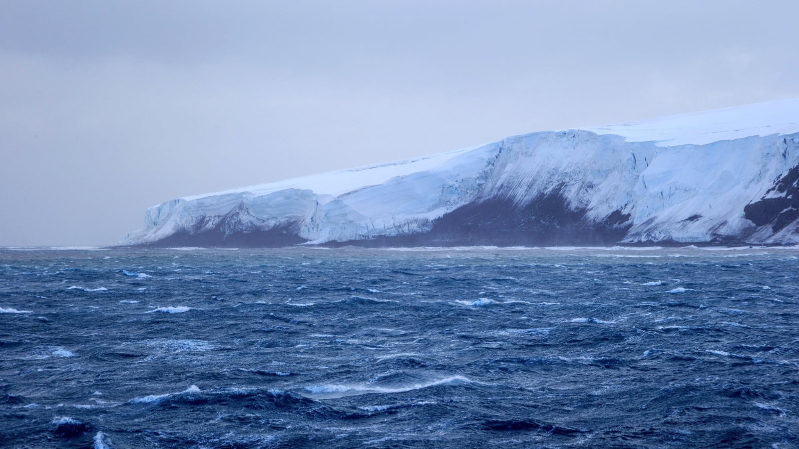

Bouvet Island
Area: 49 sq km (19 sq mi)
Population: 0
Bouvet Island is an uninhabited subantarctic volcanic island and dependency of Norway. A protected nature reserve situated in the South Atlantic Ocean at the southern end of the Mid-Atlantic Ridge, it is the world's most remote island. Located north of 60°S latitude, Bouvet Island is not part of the southern region covered by the Antarctic Treaty System.The island lies 1,700 km (1,100 mi; 920 nmi) north of the Princess Astrid Coast of Queen Maud Land, Antarctica, 1,870 km (1,160 mi; 1,010 nmi) east of the South Sandwich Islands, 1,845 km (1,146 mi; 996 nmi) south of Gough Island, and 2,520 km (1,570 mi; 1,360 nmi) south-southwest of the coast of South Africa. It has an area of 49 km (19 sq mi), 93 percent of which is covered by a glacier. The centre of the island is the ice-filled crater of an inactive volcano. Some skerries and one smaller island, Larsøya, lie along its coast. Nyrøysa, created by a rockslide in the late 1950s, is the only easy place to land and is the location of a weather station.
The island was first spotted on 1 January 1739 by the Frenchman Jean-Baptiste Charles Bouvet de Lozier, during a French exploration mission in the South Atlantic with the ships Aigle and Marie. They did not make landfall. He mislabeled the coordinates for the island, and it was not sighted again until 1808, when the British whaler James Lindsay encountered it and named it Lindsay Island. The first claim to have landed on the island was made by the American sailor Benjamin Morrell, although this claim is disputed. In 1825, the island was claimed for the British Crown by George Norris, who named it Liverpool Island. He also reported having sighted another island nearby, which he named Thompson Island, but this was later shown to be a phantom island.
In 1927, the first Norvegia expedition landed on the island, and claimed it for Norway. At that point, the island was given its current name of Bouvet Island ("Bouvetøya" in Norwegian). In 1930, following resolution of a dispute with the United Kingdom over claiming rights, it was declared a Norwegian dependency. In 1971, it was designated a nature reserve.
History
Discovery and early sightings
The island was discovered on 1 January 1739 by Jean-Baptiste Charles Bouvet de Lozier, commander of the French ships Aigle and Marie. Bouvet, who was searching for a presumed large southern continent, spotted the island through the fog and named the cape he saw Cap de la Circoncision. He was not able to land and did not circumnavigate his discovery, thus not clarifying if it was an island or part of a continent. His plotting of its position was inaccurate, leading several expeditions to fail to find the island. James Cook's second voyage set off from Cape Verde on 22 November 1772 and attempted to find the island, but also failed.
The next expedition to spot the island was in 1808 by James Lindsay, captain of the Samuel Enderby & Sons' (SE&S) snow whaler Swan. Swan and another Enderby whaler, Otter, were in company when they reached the island and recorded its position, though they were unable to land. Lindsay could confirm that the "cape" was indeed an island. The next expedition to arrive at the island was American Benjamin Morrell and his seal hunting ship Wasp. Morrell, by his own account, found the island without difficulty (with "improbable ease", in the words of historian William Mills) before landing and hunting 196 seals. In his subsequent lengthy description, Morrell does not mention the island's most obvious physical feature: Its permanent ice cover. This has caused some commentators to doubt whether he actually visited the island.
On 10 December 1825, SE&S's George Norris, master of the sealer Sprightly, landed on the island, named it Liverpool Island and claimed it for the British Crown and George IV on 16 December. The next expedition to spot the island was Joseph Fuller and his ship Francis Allyn in 1893, but he was not able to land on the island. German Carl Chun's Valdivia Expedition arrived at the island in 1898. They were not able to land, but dredged the seabed for geological samples. They were also the first to accurately fix the island's position. At least three sealing vessels visited the island between 1822 and 1895. A voyage of exploration in 1927–1928 also took seal pelts.
Norris also spotted a second island in 1825, which he named Thompson Island, which he placed 72 km (45 mi; 39 nmi) north-northeast of Liverpool Island. Thompson Island was also reported in 1893 by Fuller, but in 1898 Chun did not report seeing such an island, nor has anyone since. However, Thompson Island continued to appear on maps as late as 1943. A 1967 paper suggested that the island might have disappeared in an undetected volcanic eruption, but in 1997 it was discovered that the ocean is more than 2,400 m (7,900 ft) deep in the area.
Norwegian annexation
In 1927, the First Norvegia Expedition, led by Harald Horntvedt and financed by the shipowner and philanthropist Lars Christensen, was the first to make an extended stay on the island. Observations and surveying were conducted on the island and oceanographic measurements performed in the sea around it. At Ny Sandefjord, a small hut was erected and, on 1 December, the Norwegian flag was hoisted and the island claimed for Norway. The annexation was established by a royal decree on 23 January 1928.
The claim was initially opposed by the United Kingdom, on the basis of Norris's landing and annexation. The British position was weakened by Norris's sighting of two islands and the uncertainty as to whether he had been on Thompson or Liverpool (i.e. Bouvet) Island. Norris's positioning deviating from the correct location combined with the island's small size and lack of a natural harbour made the United Kingdom accept the Norwegian claim. This resulted in diplomatic negotiations between the two countries, and in November 1929, Britain renounced its claim to the island.
The Second Norvegia Expedition arrived in 1928 with the intent of establishing a staffed meteorological radio station, but a suitable location could not be found. By then both the flagpole and hut from the previous year had been washed away. The Third Norvegia Expedition, led by Hjalmar Riiser-Larsen, arrived the following year and built a new hut at Cape Circoncision and on Larsøya. The expedition carried out aerial photography of the island and was the first Antarctic expedition to use aircraft. The Dependency Act, passed by the Parliament of Norway on 27 February 1930, established Bouvet Island as a Norwegian dependency, along with Peter I Island and Queen Maud Land. The eared seal was protected on and around the island in 1929, and in 1935 all seals around the island were protected.
Recent history
In 1955, the South African frigate SAS Transvaal visited the island. Nyrøysa, a rock-strewn ice-free area, the largest such on Bouvet, was created sometime between 1955 and 1958, probably by a landslide.
In 1964, the island was visited by the British naval ship HMS Protector. One of Protector's two Westland Whirlwind helicopters landed a small survey team led by Lieutenant Commander Alan Crawford on the island at Nyrøysa for a brief visit. Shortly after landing, the survey team discovered an abandoned lifeboat in a small lagoon. With very little time, a brief search was made but no other signs of human activity were found, and the identity of the lifeboat remained a mystery for many years.
On 17 December 1971, the entire island and its territorial waters were protected as a nature reserve. A scientific landing was made in 1978, during which the underground temperature was measured to be 25 °C (77 °F). In addition to scientific surveys, the lifeboat found by the Protector team was recovered from Nyrøysa, although no other signs of people were found. The lifeboat was believed to belong to a Soviet scientific reconnaissance vessel.
The Vela incident took place on 22 September 1979, on or above the sea between Bouvet Island and the Prince Edward Islands, when the American Vela Hotel satellite 6911 registered an unexplained double flash. This observation has been variously interpreted as a meteor, or an instrumentation glitch, but most independent assessments conclude it was an undeclared joint nuclear test carried out by South Africa and Israel.
In the mid-1980s, Bouvet Island, Jan Mayen, and Svalbard were considered as locations for the new Norwegian International Ship Register, but the flag of convenience registry was ultimately established in Bergen, Norway, in 1987. In 2007, the island was added to Norway's tentative list of nominations as a World Heritage Site as part of the transnational nomination of the Mid-Atlantic Ridge.
Krill fishing in the Southern Ocean is subject to the Convention for the Conservation of Antarctic Marine Living Resources, which defines maximum catch quotas for a sustainable exploitation of Antarctic krill. Surveys conducted in 2000 showed high concentration of krill around Bouvet Island. In 2004, Aker BioMarine was awarded a concession to fish krill, and additional quotas were awarded from 2008 for a total catch of 620,000 t (610,000 long tons; 680,000 short tons). There is a controversy as to whether the fisheries are sustainable, particularly in relation to krill being important food for whales. In 2009, Norway filed with the UN Commission on the Limits of the Continental Shelf to extend the outer limit of the continental shelf past 200 nmi (230 mi; 370 km) surrounding the island.
The expedition ship Hanse Explorer visited Bouvet Island on 20 and 21 February 2012 as part of "Expédition pour le Futur". The expedition's goal was to land and climb the highest point on the island.
Bouvet Island is assigned the amateur radio callsign prefix 3Y0, and several amateur radio DX-peditions have been conducted to the island. The 3Y0J DX-pedition to Bouvet Island took place between January and February 2023, but had to be reduced in scope and eventually cut short due to bad and worsening weather conditions. The 3Y0K expedition to Bouvet commenced in March 2026.
Norvegia Station
Since the 1970s, the island has been visited frequently by Norwegian Antarctic expeditions. In 1977, a temporary five-man station and an automated weather station were constructed and staffed for two months in 1978 and 1979.
In March 1985, a Norwegian expedition experienced sufficiently clear weather to allow the entire island to be photographed from the air, resulting in the first accurate map of the whole island, 247 years after its discovery.
The Norwegian Polar Institute established a 36 m (390 sq ft) research station, made of shipping containers, at Nyrøysa in 1996. On 23 February 2006, the island experienced a magnitude 6.2 earthquake whose epicentre was about 100 km (62 mi; 54 nmi) away, weakening the station's foundation and causing it to be blown to sea during a winter storm.
In December 2012, a new research station was sent by ship from Tromsø in Norway, via Cape Town, to Bouvet.
The robust and technically advanced station was assembled in Nyrøysa, on the north-western part of the island, the only place wide enough to land by helicopter. The elevated station is formed by three modules placed on a steel platform fixed into a concrete base. It can accommodate six people for periods of two to four months, and it is designed and equipped to resist rough weather conditions. The energy is supplied by wind power, which makes it easier to operate the equipment during the long periods when the station is uninhabited. The base is equipped with an automated meteorological station that sends data via satellite throughout the year.
Geography and geology
Bouvetøya is a volcanic island constituting the top of a shield volcano just off the Southwest Indian Ridge in the South Atlantic Ocean. The island measures 9.5 by 7 km (5.9 by 4.3 mi) and covers an area of 49 km (19 sq mi), including a number of small rocks and skerries and one sizable island, Larsøya.
It is located in the Subantarctic, south of the Antarctic Convergence, which, by some definitions, would place the island in the Southern Ocean.
Bouvet Island has been described as the most remote island in the world. The closest land is Queen Maud Land in Antarctica, about 1,700 km (1,100 mi; 920 nmi) to the south. Gough Island lies about 1,860 km (1,160 mi; 1,000 nmi) to the north, while to the east are the Prince Edward Islands, about 2,570 km (1,600 mi; 1,390 nmi) away, and to the west are the South Sandwich Islands, about 1,900 km (1,200 mi; 1,000 nmi) away. The nearest inhabited place is Tristan da Cunha, about 2,260 km (1,400 mi; 1,220 nmi) to the northwest.
Nyrøysa is a 2 by 0.5 km (1.2 by 0.3 mi) terrace located on the northwest coast of the island. Created by a rock slide sometime between 1955 and 1957, it is the island's easiest access point. It is the site of the automatic weather station. The northwest corner is the peninsula of Cape Circoncision. From there, east to Cape Valdivia, the coast is known as Morgenstiernekysten.
Store Kari is an islet located 1.2 km (0.75 mi; 0.65 nmi) east of the cape. From Cape Valdivia, southeast to Cape Lollo, on the east side of the island, the coast is known as Victoria Terrasse. From there to Cape Fie at the southeastern corner, the coast is known as Mowinckelkysten. Svartstranda is a section of black sand which runs 1.8 km (1.1 mi) along the section from Cape Meteor, south to Cape Fie.
After rounding Cape Fie, the coast along the south side is known as Vogtkysten. The westernmost part of it is the 300 m-long (1,000 ft) shore of Sjøelefantstranda.
Off Catoodden, on the south-western corner, lies Larsøya, the only island of any size off Bouvet Island. The western coast from Catoodden north to Nyrøysa, is known as Esmarchkysten. Midway up the coast lies Norvegiaodden (Cape Norvegia) and 0.5 km (0.31 mi) off it the skerries of Bennskjæra.
Ninety-three percent of the island is covered by glaciers, giving it a domed shape. The summit region of the island is Wilhelmplatået (Wilhelm Plateau), slightly to the west of the island's centre. The plateau is 3.5 km (2.2 mi) across and surrounded by several peaks. The tallest is Olavtoppen, 780 m (2,560 ft) above mean sea level (AMSL), followed by Lykketoppen (766 m or 2,513 ft AMSL) and Mosbytoppane (670 m or 2,200 ft AMSL). Below Wilhelmplatået is the main caldera responsible for creating the island. The last eruption took place circa 2000 BCE, producing a lava flow at Cape Meteor. The volcano is presumed to be in a declining state. The temperature 30 cm (12 in) below the surface is 25 °C (77 °F).
The island's total coastline is 29.6 km (18.4 mi). Landing on the island is very difficult, as it normally experiences high seas and features a steep coast. During the winter, it is surrounded by pack ice. The Bouvet triple junction is located 275 km (171 mi; 148 nmi) west of Bouvet Island. It is a triple junction between the South American plate, the African plate and the Antarctic plate, and of the Mid-Atlantic Ridge, the Southwest Indian Ridge and the American–Antarctic Ridge.
Climate
The island is located south of the Antarctic Convergence, giving it a marine Antarctic climate dominated by heavy cloud and fog. It experiences a mean temperature of −1 °C (30 °F), with February average of 2 °C (36 °F) and August average of −4 °C (25 °F). The monthly high mean temperatures fluctuate little through the year. The peak temperature of 14 °C (57 °F) was recorded in March 1980, caused by intense sun radiation. Spot temperatures as high as 20 °C (68 °F) have been recorded in sunny weather on rock faces. The island predominantly experiences a weak west wind.
Nature
The harsh climate and ice-bound terrain limits non-animal life to fungi (ascomycetes including symbiotic lichens) and non-vascular plants (mosses and liverworts). The flora are representative for the maritime Antarctic and are phytogeographically similar to those of the South Sandwich Islands and South Shetland Islands. Vegetation is limited because of the ice cover, although snow algae are recorded. The remaining vegetation is located in snow-free areas such as nunatak ridges and other parts of the summit plateau, the coastal cliffs, capes and beaches. At Nyrøysa, five species of moss, six ascomycetes (including five lichens), and twenty algae have been recorded. Most snow-free areas are so steep and subject to frequent avalanches that only crustose lichens and algal formations are sustainable. There are six endemic ascomycetes, three of which are lichenized.
The island has been designated as an Important Bird Area by BirdLife International because of its importance as a breeding ground for seabirds. In 1978–1979 there were an estimated 117,000 breeding penguins on the island, consisting of macaroni penguin and, to a lesser extent, chinstrap penguin and Adélie penguin, although these were only estimated to be 62,000 in 1989–1990. Nyrøysa is the most important colony for penguins, supplemented by Posadowskybreen, Kapp Circoncision, Norvegiaodden and across from Larsøya. Southern fulmar is by far the most common non-penguin bird with 100,000 individuals. Other breeding seabirds consist of Cape petrel, Antarctic prion, Wilson's storm petrel, black-bellied storm petrel, subantarctic skua, southern giant petrel, snow petrel, slender-billed prion and Antarctic tern. Kelp gull is thought to have bred on the island earlier. Non-breeding birds which can be found on the island include the king penguin, wandering albatross, black-browed albatross, Campbell albatross, Atlantic yellow-nosed albatross, sooty albatross, light-mantled albatross, northern giant petrel, Antarctic petrel, blue petrel, soft-plumaged petrel, Kerguelen petrel, white-headed petrel, fairy prion, white-chinned petrel, great shearwater, common diving petrel, south polar skua and parasitic jaeger.
The only non-bird vertebrates on the island are seals, specifically the southern elephant seal and Antarctic fur seal, which breed on the island. In 1998–1999, there were 88 elephant seal pups and 13,000 fur seal pups at Nyrøysa. Southern right whale, humpback whale, fin whale, southern right whale dolphin, hourglass dolphin, and orca are seen in the surrounding waters.
Politics and government
Bouvet Island is one of three dependencies of Norway. Unlike Peter I Island and Queen Maud Land, which are subject to the Antarctic Treaty System, Bouvet Island is not disputed. The dependency status entails that the island is not part of the Kingdom of Norway, but is still under Norwegian sovereignty. This implies that the island can be ceded without violating the first article of the Constitution of Norway. Norwegian administration of the island is handled by the Polar Affairs Department of the Ministry of Justice and the Police, located in Oslo.
The annexation of the island is regulated by the Dependency Act of 24 March 1933. It establishes that Norwegian criminal law, private law and procedural law apply to the island, in addition to other laws that explicitly state they are valid on the island. It further establishes that all land belongs to the state, and prohibits the storage and detonation of nuclear products.
Bouvet Island has been designated with the ISO 3166-2 code BV and was subsequently awarded the country code top-level domain .bv on 21 August 1997. The domain is managed by Norid but is not in use.
The exclusive economic zone surrounding the island covers an area of 441,163 km (170,334 sq mi; 128,623 sq nmi). Monitoring of compliance with resource laws and regulations is carried out through the Commission for the Conservation of Antarctic Marine Living Resources (CCAMLR) which includes 27 member states, including Norway. Utilizing an intelligence-sharing approach, vessels that may have participated in illegal, unregulated or unreported fishing are subject to blacklisting and potential enforcement measures by member states and through Interpol.
In popular culture
A king penguin in Edinburgh Zoo, Major General Sir Nils Olav III, carries the title Baron of the Bouvet Islands.
In the film "AVP: Alien vs Predator" Bovet Island is the setting where Aliens are accidentally set loose to battle Predators and trapped human scientists. The Island is referred to as "Bouvetoya Island."